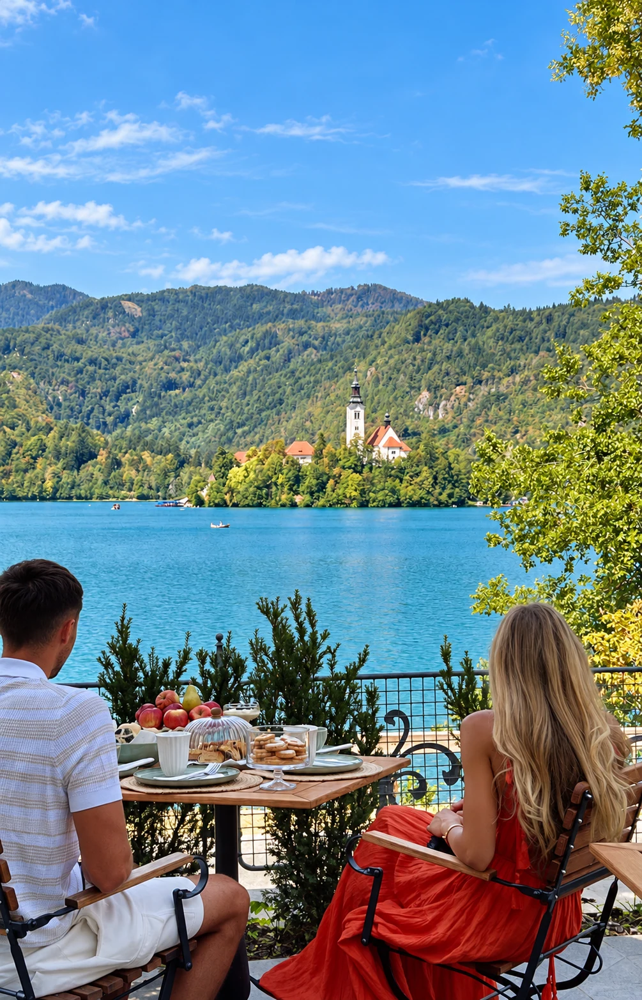
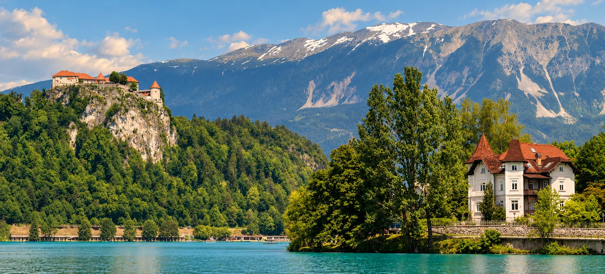
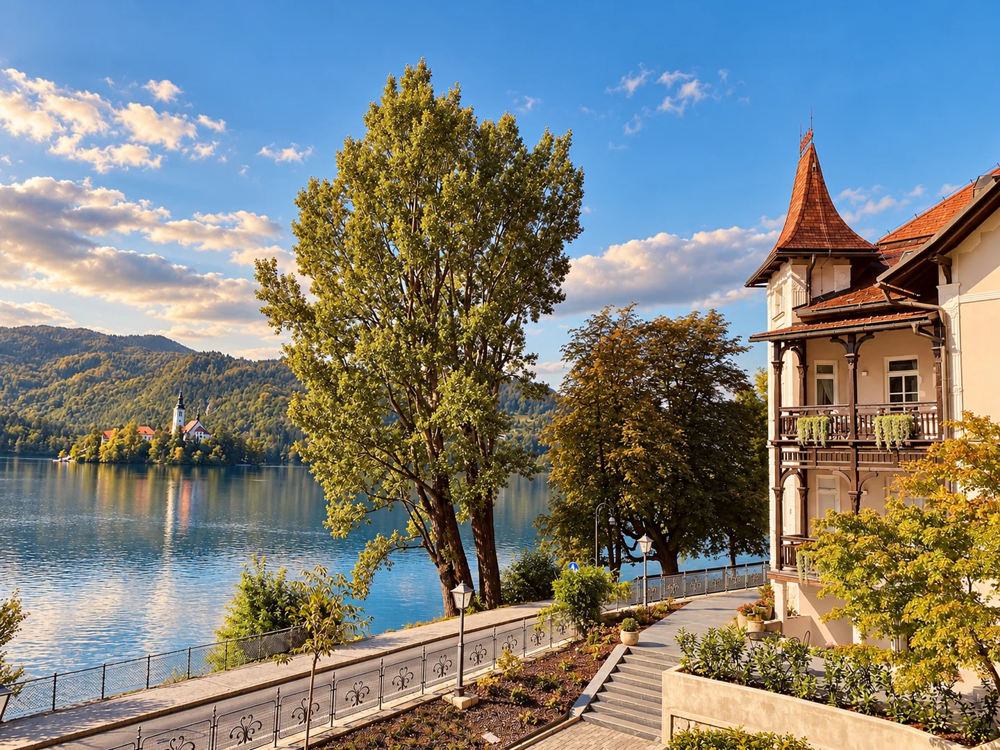
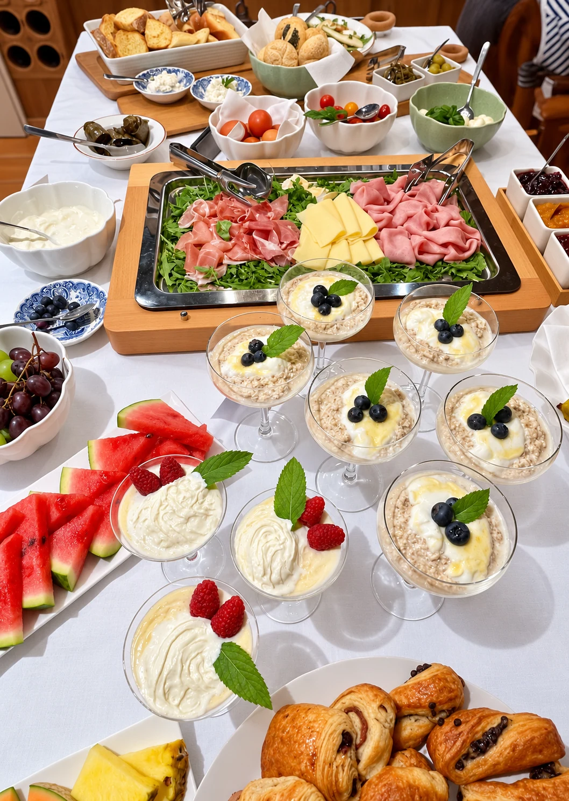

Breakfast by
Lake Bled.
Enjoy our breakfast buffet with views of Bled Island. Open to everyone, every morning.
Plan your breakfast
Request a
breakfast table.
€35 per person. Choose your date and guests, then email your request. We will reply to confirm availability. You can also call us below.
Good mornings, simply done
Breakfast in Bled.
Made beautifully.
Choose what you like, come back for more, and take your time. Our all-in-one breakfast buffet brings together fresh ingredients, warm favourites and the quiet feeling of a morning directly beside Lake Bled, with views of the lake and island.
Hotel guests and outside visitors welcome.
Daily 7:30–10:30 · €35 per person
Cesta svobode 35, Bled
Villa Adora
Breakfast at
Villa Adora.
Start your morning at this historic villa beside Lake Bled. Discover the hotel and its rooms on the Villa Adora website.
Visit Villa Adora ↗

From the breakfast table
Breakfast,
up close.
Take a look at the buffet, the setting and the views waiting for you at Villa Adora.

.jpeg)
Inside or out.
Choose the large terrace, an island-facing table in front of the pavilion, the pavilion itself, or the sundeck above. Tell us your preference when you enquire; outdoor seating depends on the weather.
Questions, answered
Breakfast in Bled,
made easy.
Is breakfast open to outside visitors?
Yes. Breakfast at Villa Adora is open to hotel guests and outside visitors.
What time is breakfast served?
Breakfast is served every day from 7:30 to 10:30.
Where is Villa Adora breakfast?
We are directly beside Lake Bled at Cesta svobode 35, with views of the lake and Bled Island. The centre of Bled is approximately a 10-minute walk away.
Can I choose where to sit?
Yes. You can request the large terrace, a table with a view of the island in front of the pavilion, the pavilion, the sundeck above the pavilion, or an indoor table depending on your wishes and the weather.
Is parking available?
Parking is available on request in front of the house. Sokol parking may also be available, subject to availability.
Should I reserve a table?
Reservations are recommended for weekends and holidays. The form opens an email draft: send your request and wait for our reply to confirm your table.
How much is breakfast, and what is included?
The breakfast buffet is €35 per person. Choose from bakery items, warm breakfast dishes, fruit, yoghurt and cereals, with juice, coffee and tea. See the buffet selection above.
Find us
Directly beside
the lake.
Villa Adora is directly beside Lake Bled, with views of the lake and Bled Island. The centre of Bled is approximately a 10-minute walk away. Parking is available on request in front of the house; Sokol parking may also be available.